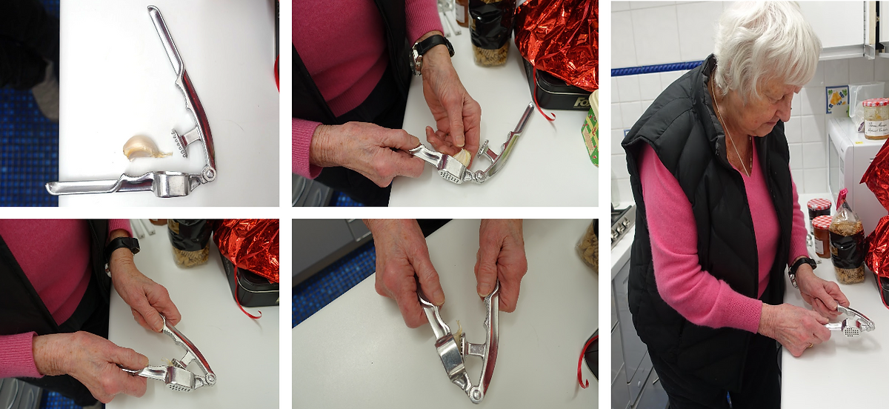
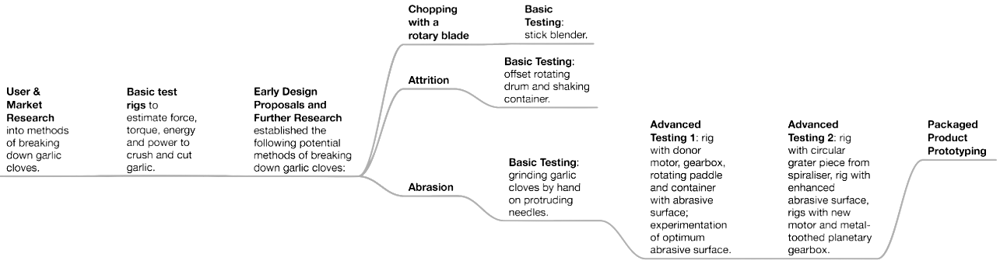

Spry was developed to enhance the cooking experience for individuals with weak grip strength, evolving from a garlic press to a versatile tool that encourages the mass market to experiment with spices and flavors in cooking. The design process adhered to a human-centered approach, driven by genuine user insights from extensive research, followed by iterative prototyping and testing.
User Testing
The development of Spry was guided by extensive user research to deeply understand the needs of its target audience. Two online surveys gathered 64 responses to explore general cooking habits. Additionally, 28 phone interviews provided in-depth insights into how people use garlic and spices in their daily lives. In-person interviews at Morecambe Parish Church with eight elderly individuals suffering from reduced grip strength revealed key challenges in cooking. A detailed observational case study with Toni, an 83-year-old woman with significant strength and motion impairments, highlighted usability barriers and informed critical design decisions.
Design Approach
Spry’s development followed a human-centered design process, emphasizing simplicity, durability, and usability. The product was engineered with a focus on minimizing parts and maximizing ingress protection, resulting in a seamless exterior with only one L-shaped pivot switch. This innovative pivot allowed dual operation: pressing on the top for worktop use and squeezing from the side for over-the-pan tasks. Flipping the pivot revealed the charging port, maintaining the device’s compact and intuitive design. Iterative prototyping and testing ensured the design met both functional and ergonomic requirements.
Rapid Prototyping

Final Product
The final prototype of Spry was tested with Toni, who had been unable to crush or grate garlic and spices for over a decade due to reduced dexterity and vision. Her response of pleasant surprise validated Spry’s effectiveness, demonstrating its ability to restore lost capabilities and enhance independence. Spry combines thoughtful design, functionality, and inclusivity to offer a tool that not only meets the needs of individuals with grip impairments but also encourages everyone to experiment with flavors in their cooking.